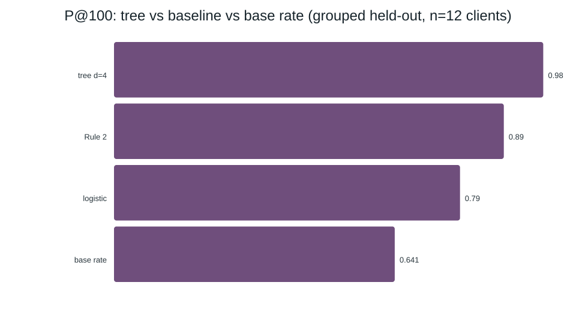

Capstone Report — Refresh / Content Opportunity Scoring · Wyatt Degenhart · Decision point D = 2026-05-31 (May → June) · repo: WittySmirk/flyrank
I score labelable pages by how much attention they need so site maintainers know which ones to target first. I use May search + engagement aggregates from the FlyRank warehouse with the label declined_30d_future (June impressions under 80% of May). A depth-4 decision tree, grouped by client, ranks declining pages at P@100 0.98 vs the frozen Rule-2 baseline 0.89 and base rate 0.641. The win holds over 5 grouped seeds and survives a random-split audit; about 1 in 5 confident picks self-heal. The paper ends in a review-first queue with reason codes — momentum ranking, not proof a refresh will work.
Decision-support queue, from May features to a June label at D = 2026-05-31. Source notebook: work/notebooks/capstone.ipynb.
Lane 2: Refresh / Content Opportunity Scoring. Which pages should be reviewed first for refresh, expansion, protection, pruning, or monitoring?
I chose refresh/content opportunity scoring because it seems integral to FlyRank's core product. From what I've gathered, picking and ranking pages that a client should refresh in order to optimize traffic would need to use most of the observable data, and be critical to the business problem.
My lane Refresh/Content Opportunity Scoring is a combination of scoring and ranking. Fundamentally the task is to score the pages based on how much attention is needed, but also rank them based off these scores so site maintainers know which ones to target first.
The work empowers business' to choose which pages to first further optimize to improve overall SEO. Project managers/owners would mainly act on this recommendation; allocating resources appropriately to update the suggested pages. A wrong recommendation would mainly cost the time of the business. There is also the possibility that a refresh could not improve the SEO of a page, but have the inverse effect. Additionally a missed declining page would lead to continued traffic loss that could've been improved. There are many signals that impact the ranking of which pages need attention and these signals shift over time. This lends this problem to be hard to predict with a simple logic rule, and an effective problem for ML to tackle.
The pattern is too messy for an if-statement because there are many factors that go into which pages need to be refreshed. For example just observing the trend and ranking based on that might not tell the full story; an old outdated blogpost could have a worst trend than a real product page, but the product page may be more important to refresh first.
Success metric: Precision at 10 — how many of the top 10 pages the model ranks highest actually needed a refresh.
Careful words from the start: this model observes trends in the provided dataset and predicts which pages are most in need of a refresh. It will not predict Google/ChatGPT/Claude's recommendation engine or prove that refreshing page X improves SEO by Y — it is a starting point for allocating SEO efforts.
One row is one piece of content for one client's combined GSC and GA4 data on a given date (1/27/2025–6/30/2026). Tables: dim_clients (104 clients) + dim_content + fact_content_daily_performance (78,835,655 rows) + fact_content_query_90d.
Decision point D = 2026-05-31. Features come from (D-30, D]; the label is June (D, D+30], not knowable at decision time. Facts run through 2026-06-30, so the label window is fully observed.
Excluded: sessions_paid (paid traffic irrelevant to refresh), ai_* vendor splits, IDs (client_hash_id, content_hash_id group/split only, never features).
Limits: clients start tracking at different times and can't be compared equally; 37.6% of rows have GSC-only data (GA4 zeroes mean untracked, not zero); 6,390 grain duplicates deduped.
Labelable filters (survivorship note, stated with every finding): prior_imp≥100, prior_obs≥7, future_obs≥7 — 100,785 of 333,275 window rows (30.3%, 41 of 52 clients). Label declined_30d_future = 1 when June impressions < 80% of May; base rate 0.655 (0.641 grouped test).
All features knowable on 2026-05-31. Prior-30d aggregates + static metadata; imp_ratio and pos_delta split the prior month in half (like the baseline). declined_30d_future (June) used for testing only. One matrix for both models; NaN → train-median.
Models: decision tree depth 4, min_samples_leaf 100 (primary) vs standardized L2 logistic regression (comparison), both ranked at precision@K on the same split vs frozen Rule 2. The tree keeps its job only if it wins the numbers.
Baseline (frozen Rule 2): a page is worth refreshing when its impressions are falling across the prior month and its position is slipping too — the classic fading star. Falling = second half < 80% of first-half impressions; slipping = weighted position worse. Reason codes IMPRESSIONS_FALLING, POSITION_SLIPPING. Tie-break only, never a feature.
Validation: grouped by client (70/30, seed 42) — "does it work on a client it never saw?" Week 6 fixes everything except the split: random rows (39 of 41 clients on BOTH sides) vs grouped (0 shared). Pure time split = future work.
Leakage hunt: label-derived columns (inject → confession 1.000 → remove); future/overlapping windows (every feature ends at D; query-table impressions_90d/*_last30 contain June so only *_prev30 would be safe — this work uses the daily fact only); product flags (none exist). Solo-feature scan tops at imp_ratio 0.860 — momentum, not leakage.
Shipped matrix: 17 numeric + 8 one-hot = 25 features; no future_/declined_/trend_ feature; IDs group only.
Verdict: decision tree d=4 wins, beats baseline at every K, and beats logistic regression at P@50/P@100.
| model | P@10 | P@20 | P@50 | P@100 |
|---|---|---|---|---|
| baseline (Rule 2) | 0.80 | 0.85 | 0.86 | 0.89 |
| logistic regression | 0.80 | 0.85 | 0.84 | 0.79 |
| decision tree d=3 | 0.80 | 0.85 | 0.94 | 0.94 |
| decision tree d=4 | 1.00 | 1.00 | 0.98 | 0.98 |
| decision tree d=5 | 1.00 | 1.00 | 1.00 | 0.99 |
| base rate (grouped test, 12 clients) | 0.641 |

Takeaway: the tree beats the rule at every K; the stable claim is P@50/P@100 ≈ 0.94–0.99 (head P@10/20 is depth-sensitive).
What the tree leans on: imp_ratio (#1 split, importance 0.474) — a page that lost most impressions in late May usually keeps losing in June (momentum, ends at D, not leakage). content_age_days second (0.246): older pages are classic refresh targets.
Audit: random split flatters logistic (+12–17 pts) and Rule 2 (+5–20 pts) via client memorization (39/41 clients both sides). The tree is split-proof (gap ≈ 0). Over 5 grouped seeds: tree P@50 0.972±0.016, P@100 0.980±0.006; Rule 2 P@100 0.924±0.025 — tree above baseline every draw. Positive controls hit 1.000, so the harness catches leaks.
One snapshot, one window (May→June), ~12 held-out clients: directional evidence, not a guarantee. Head P@10–20 moves with seed/depth — claim P@50/P@100 only. Queue covers labelable pages only (100,785 of 333,275); says nothing about low-volume/thin-history pages. Refresh effect NOT measured — treated pages were CHOSEN; no refresh experiment; I do not predict Google's algorithm. Among test rows scored > 0.8 (22.6% of test), 19.1% did not decline — a May collapse that self-healed. Treat the top as "already bleeding," not "will bleed": ~1 in 5 confident picks recovers alone.
The queue suggests which pages to review first; it does not guarantee refresh wins. Work top-down. BEFORE any REVIEW_FIRST row, a human confirms: (1) page live/indexable/canonical, (2) full-half collapse vs one bad week (prefer WATCH for spikes), (3) ownership/staleness/campaigns, (4) revenue/brand sign-off, (5) log the decision.
NO-GO: never auto-publish; never act on non-labelable rows; never use query *_last30; never claim "refresh will recover X%"; never refresh solely for missing keyword/word-count; never compare raw ranks across clients.
Queue: top 500 of 100,785 labelable, all REVIEW_FIRST, 100% SHARP_DROP/FALLING (POSITION_SLIPPING 449, THIN_ENGAGEMENT 373, OLD_PAGE_365D 72, MISSING_WORDCOUNT 42, STALE_90D 18, MISSING_KEYWORD 5).
Source: work/notebooks/capstone.ipynb (16 cells, Run All). Split grouped-by-client 70/30 seed 42; tree max_depth=4, min_samples_leaf=100, random_state=42. Label declined_30d_future = (future_imp < 0.8 * prior_imp), labelable prior_imp≥100 & prior_obs≥7 & future_obs≥7. Re-run: pip install -r requirements.txt, then Run All. Honest claim: observed May→June, P@100 ~0.98 held-out; ~1-in-5 self-heal; claim P@50/P@100; review-first, not causal.
FlyRank warehouse (dim_clients, dim_content, fact_content_daily_performance, fact_content_query_90d) via May–June partitions at D = 2026-05-31. Builds on W04–W07. No client-identifying details published; hashes group/split only.